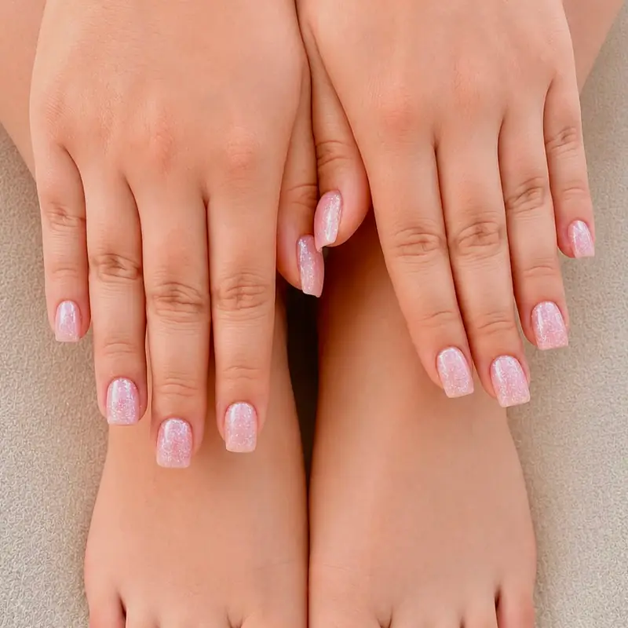

Rus manikürü — diğer adıyla kuru manikür — suda bekletme ve makasla kesme yerine döner freze uçlarıyla çalışılan bir tekniktir. Kütikül alanı çok daha net temizlendiği için kalıcı oje dibe kadar yaklaştırılabilir; sonuç hem daha düzgün görünür hem gözle görülür şekilde daha uzun dayanır.

Klasik Manikürden Farkı Ne?
Su Kullanılmaz
Tırnak suda bekletilmez. Su emmiş tırnak şişer; kuruyunca uygulama dipten kalkabilir. Kuru teknikte bu sorun ortadan kalkar.
Kesme Yerine Freze
Makasla kesmek yerine ölü doku frezeyle inceltilerek alınır. Kanama ve yırtılma riski belirgin şekilde düşer.
Dibe Yakın Uygulama
Alan net temizlendiği için renk dibe kadar yaklaştırılabilir. Uzayan dip daha geç belli olur.
Daha Uzun Ömür
Dip hazırlığı iyi yapıldığı için kalkma genelde daha geç başlar; birçok kişide 3-4 haftaya kadar çıkar.
Kimler İçin Özellikle Uygun?
- Kütikül kesiminden rahatsız olanlar — kesme işlemi neredeyse tamamen devre dışı kalır.
- Kalıcı ojesi dipten çabuk kalkanlar — sorunun kaynağı çoğu zaman yetersiz dip hazırlığıdır ve bu teknik tam olarak orayı çözer.
- Kütikülü hızlı uzayanlar — daha net temizlik, daha geç belli olan dip.
- Uygulama arasını uzatmak isteyenler — daha uzun ömür, daha seyrek randevu.
Dikkat Edilmesi Gerekenler
Bu teknik doğru ellerde çok iyi sonuç verir, ancak deneyim gerektirir. Freze ucunun açısı, devir hızı ve baskı yanlış olursa tırnak yatağı incelir veya hassasiyet oluşur. Uygulama sırasında acı veya yanma hissetmemelisiniz — böyle bir durumda hemen söylemeniz gerekir.
Tırnak çevresinde aktif iltihap, mantar şüphesi veya açık yara varsa uygulama ertelenmelidir. Mantar belirtileri için tırnak mantarı yazımıza bakabilirsiniz.
Süre ve Sonrası
Rus manikürü ortalama 60-75 dakika sürer; kalıcı oje eklendiğinde 90 dakikaya çıkabilir. Klasik manikürden uzun sürmesinin sebebi dip hazırlığına ayrılan zamandır — sonucun uzun ömürlü olmasının nedeni de tam olarak bu.
Sonrasında kütikül yağı kullanmaya devam etmeniz önemli. Detaylar için rus manikürü rehberimizi ve kalıcı oje bakımı yazımızı okuyabilirsiniz.
Sık Sorulan Sorular
Rus manikürü tırnağa zarar verir mi?
Doğru uygulandığında hayır. Aksine kesme işlemi olmadığı için yırtılma ve kanama riski klasik manikürden düşüktür. Ancak freze açısı ve baskısı yanlış olursa tırnak yatağı incelebilir; bu yüzden deneyimli uygulama şart. İşlem sırasında acı veya yanma hissederseniz mutlaka söyleyin.
Rus manikürü ne kadar dayanır?
Dip hazırlığı çok daha iyi yapıldığı için üzerine uygulanan kalıcı oje genelde 3-4 hafta korunur. Klasik manikür üzerine yapılan uygulamada bu süre çoğunlukla 2-3 hafta ile sınırlı kalır.
Acıtır mı?
Hayır, doğru uygulandığında acıtmaz. Freze sadece ölü dokuya temas eder. Hassasiyet, yanma veya acı hissediyorsanız bu uygulamanın yanlış açı veya baskıyla yapıldığını gösterir ve hemen belirtmeniz gerekir.
Kalıcı oje ile birlikte yaptırabilir miyim?
Evet, en sık tercih edilen kombinasyon bu. Rus manikürü zaten kalıcı oje için ideal zemini hazırlar. Toplam süre yaklaşık 90 dakikadır.
Klasik manikürden pahalı mı?
Daha uzun sürdüğü ve daha fazla teknik hazırlık gerektirdiği için genelde biraz daha yüksektir. Ancak uygulama daha uzun dayandığı için randevu sıklığınız azalır; aylık toplamda çoğu kişi için fark kapanıyor.
Rus Manikürünü Deneyin
Kütikül kesiminden rahatsızsanız veya kalıcı ojeniz dipten çabuk kalkıyorsa bu teknik büyük fark yaratıyor. Randevu için yazın.